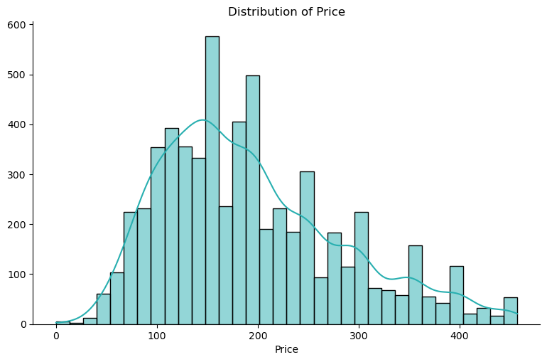
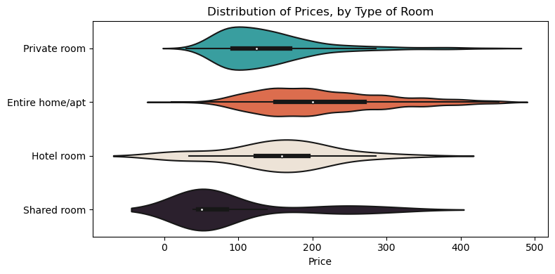
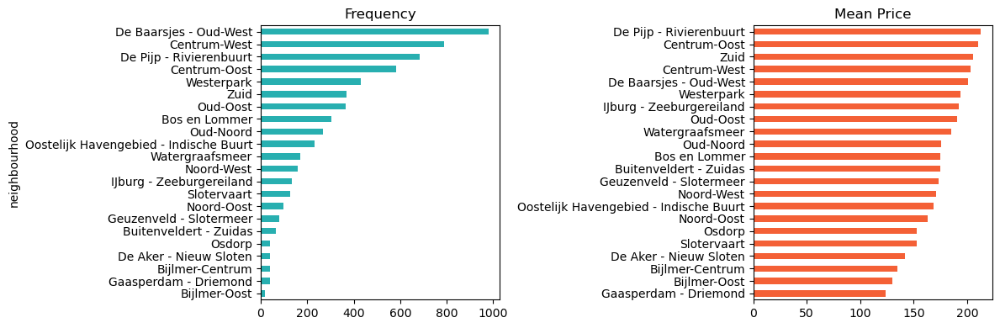
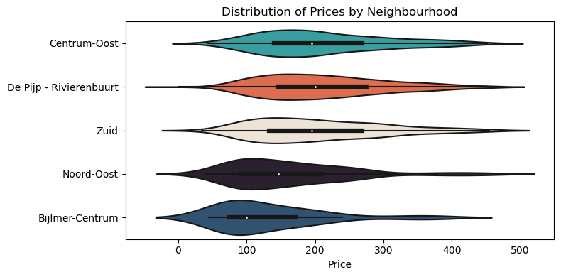
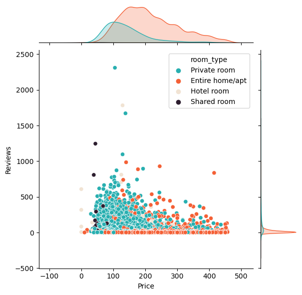

In this section, we will conduct an Exploratory Data Analysis (EDA) to gain a deeper understanding of the Amsterdam Airbnb dataset.
This EDA serves as a important step in extracting valuable information and identifying key factors that influence Airbnb pricing in Amsterdam.
Listings Statistics
Here is a quick overview of our listings dataset:
Code
listings.head(2)
id
name
host_id
host_name
neighbourhood
latitude
longitude
room_type
price
minimum_nights
number_of_reviews
last_review
reviews_per_month
calculated_host_listings_count
availability_365
number_of_reviews_ltm
0
2818
Quiet Garden View Room & Super Fast Wi-Fi
3159
Daniel
Oostelijk Havengebied - Indische Buurt
52.36435
4.94358
Private room
69
3
322
2023-02-28
1.90
1
44
37
1
20168
Studio with private bathroom in the centre 1
59484
Alexander
Centrum-Oost
52.36407
4.89393
Private room
106
1
339
2020-04-09
2.14
2
0
0
Price
As previously shown, Figure 1 presents the distribution of price of all our units in the sample:
Code
import seaborn as snsmy_colors =['#28AFB0', '#F46036', '#F1E3D3', '#2D1E2F', '#26547C']# Set up Figure#fig, ax = plt.subplots(figsize=(8,5))# Hist + KDEsns.displot(data=listings, x="price", kde=True, color=my_colors[0], aspect=8/5)# Labelsplt.xlabel('Price')plt.ylabel('')plt.title('Distribution of Price')# Show the Plotplt.show()

Figure 1: Distribution of Price
The average price per night for Airbnb listings in Amsterdam is approximately 190 euros.
import seaborn as snsmy_colors =['#28AFB0', '#F46036', '#F1E3D3', '#2D1E2F', '#26547C']# Set up Figurefig, ax = plt.subplots(figsize=(8,4))# Violin Plotsns.violinplot(data=listings, x="price", y="room_type", palette=my_colors)# Labelsplt.xlabel('Price')plt.ylabel('')plt.title('Distribution of Prices, by Type of Room')# Show the Plotplt.tight_layout()plt.show()

Figure 3: Distribution of Prices, by Type of Room
Upon analyzing Table 1 and Figure 3, it’s evident that entire homes command the highest prices in the Amsterdam Airbnb market (214 euros), followed by hotel rooms (154 euros). This observation suggests that guests are willing to pay a premium for the privacy and amenities offered by entire accommodations.
Additionally, we note that private rooms exhibit less dispersion in prices compared to entire homes and hotel rooms. This might imply a more consistent pricing structure within the private room category, possibly influenced by factors such as location, amenities, and room size.
We also computed the average minimum nights required for booking across different room types in the Amsterdam Airbnb market:
Table 2 suggest that entire homes and private rooms typically require a longer minimum stay compared to hotel rooms and shared rooms. One potential factor contributing to this discrepancy is economies of scale. Larger accommodations such as entire homes and private rooms may require longer minimum stays to offset operational costs and maximize profitability. Conversely, hotel rooms and shared rooms, which typically offer more compact and flexible accommodations, tend to have shorter minimum stay requirements.
Hotel rooms have the highest average number of reviews per listing, followed by private rooms and shared rooms, while entire homes/apartments have the lowest average number of reviews.
This suggests that hotel rooms tend to receive more feedback from guests compared to other accommodation types.
In our analysis of Amsterdam Airbnb listings, we’ve identified several neighborhoods commanding higher average prices, notably De Pijp - Rivierenbuurt, Centrum-Oost, Zuid, and Centrum-West. With average prices ranging from 202 to 213 euros per night, these neighborhoods emerge as premium destinations within the Amsterdam accommodation market. Notably, De Pijp - Rivierenbuurt, historically recognized for its affluent reputation, continues to attract visitors seeking upscale experiences.
Code
# Set up Figurefig, axs = plt.subplots(1, 2, figsize=(12,4))# Plotneigh_df.sort_values("count")['count'].plot(ax=axs[0], color=my_colors[0], kind='barh')neigh_df.sort_values("mean")['mean'].plot(ax=axs[1], color=my_colors[1], kind='barh')# Labelsaxs[0].set_title('Frequency')axs[1].set_title('Mean Price')axs[0].set_xlabel('')axs[1].set_xlabel('')axs[0].set_ylabel('neighbourhood')axs[1].set_ylabel('')# Show the Plotplt.tight_layout()plt.show()

Figure 4: Count and Mean Price by Neighbourhood
Code
import seaborn as snsmy_colors =['#28AFB0', '#F46036', '#F1E3D3', '#2D1E2F', '#26547C']# Set up Figurefig, ax = plt.subplots(figsize=(8,4))# Filtersome_neighs = listings['neighbourhood'].isin( ['Centrum-Oost','Zuid', 'De Pijp - Rivierenbuurt', 'Noord-Oost', 'Bijlmer-Centrum'])# Violin Plotsns.violinplot(data=listings[some_neighs], x="price", y="neighbourhood", palette=my_colors)# Labelsplt.xlabel('Price')plt.ylabel('')plt.title('Distribution of Prices by Neighbourhood (subsample)')# Show the Plotplt.tight_layout()plt.show()

Figure 5: Distribution of Prices by Neighbourhood (subsample)
Figure 6: Average Price Trend, by some Neighbourhoods
After plotting the time series of average prices across the top neighborhoods and other neighborhoods in Amsterdam ( Figure 6 ), we observe a consistent and steady evolution of prices over time, with no significant increasing trend.
This stable pricing pattern suggests that the Amsterdam Airbnb market maintains a relatively balanced and predictable pricing environment across different neighborhoods. Despite fluctuations influenced by seasonal variations or occasional events, there is no clear upward trajectory in prices over the observed time period
Reviews Statistics
We can use the jointplot function to visualize the relationship between price, number of reviews, and room type:
Code
import seaborn as snsmy_colors =['#28AFB0', '#F46036', '#F1E3D3', '#2D1E2F', '#26547C']# Set up Figure#fig, ax = plt.subplots(figsize=(8,5))# Hist + KDEsns.jointplot(data=listings, y="number_of_reviews", x="price", hue='room_type', palette=my_colors)# Labelsplt.ylabel('Reviews')plt.xlabel('Price')#plt.title('Distribution of Price')# Show the Plotplt.show()

Figure 7: Reviews and Price, by Type
Private rooms, often priced lower than entire homes, may attract guests looking for budget-friendly accommodations, which could contribute to lower review counts.
Reviews per Month
Code
import seaborn as snsmy_colors =['#28AFB0', '#F46036', '#F1E3D3', '#2D1E2F', '#26547C']# Set up Figure#fig, ax = plt.subplots(figsize=(8,5))# Hist + KDEsns.jointplot(data=listings, y="reviews_per_month", x="price", hue='room_type', palette=my_colors)# Labelsplt.ylabel('Reviews per month')plt.xlabel('Price')#plt.title('Distribution of Price')# Show the Plotplt.show()